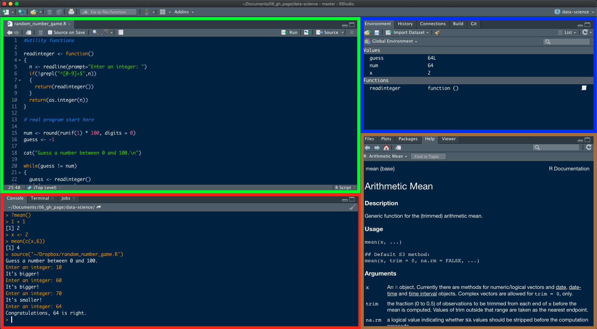

install.packages("swirl")Content
Welcome!
Welcome to “Causal Data Science for Business Analytics”!
In this course, you will learn about causality in data science with a particular emphasis on business applications. Causal data science methods are increasingly recognized and developed to understand causes and effects. Moving beyond a prediction-based approach in data science, the purpose of causal methods is to understand underlying processes and mechanisms to guide strategic decision-making. Causal methods allow us to answer questions that otherwise could not be addressed.
According to a large global survey1 conducted among data science practitioners in industry in 2020, 83% of respondents consider causal inference increasingly important for data-driven decision making. Moreover, 44% state that, in their data science projects, causal inference already is important.
Setup
Mattermost
In the course of the next chapters, we will do a lot of coding and errors will occur all the time. That is nothing you should be afraid of and in fact, dealing with errors is an elementary component in programming in data science.
In most cases, other people from around the world have had similar problems and you will find the right solution to your problem by just googling it. Two great resources to help you are StackOverflow and RStudio Community. Please try to do that as a first step when you run into an error.
If you have any questions about the class content, coding problems and other challenges, please use our Mattermost channel, so that everyone can benefit from the discussions. Please help each other, try to answer emerging questions and actively engage in the channel. Questions, that are not directly related to the class content, can be sent to me.
Follow these steps to join the channel:
Click Click here to sign in
Click the Button GitLab
You may need to login to GitLab with your Kerberos/LDAP data (e.g. cba1020 and your password) on the following page and/or authorize once for Mattermost to access GitLab. You may also need to accept the terms.
After accessing Mattermost, join the team W-11 students
Join Causal Data Science Channel (you might need to wait a bit, as I first have to add you)
There, and in the classes of course, I will try to help you as much as possible.
In order to keep the discussion efficient and manageable it is necessary that we all follow some basic rules:
Post error message: if you run into an error it is necessary that I know what the error is. Often reading the error message very carefully can also help you to understand where the problem comes from.
Post the code that caused the error: in order to reproduce the error I need the last command that caused the error. If we need more context we will ask you for that.
Use the formatting guidelines of Mattermost when you post code. That makes a huge difference in terms of readability. They will also be linked in the channel description. Most important is that using ``` one line above and one line below your code will make it easy to read.
Use thread function to reply to a discussion. This way a discussion can be easier read. You find the reply button on the right side of a message.
Playing by these rules makes it a lot easier for everyone to follow the discussion and learn from similar problems and everyone can benefit from the discussions.
```r
x %>% sum()
```
**Error:**
Error in x %>% sum() : could not find function "%>%"

Installing R & RStudio IDE
Before we dive deep into the methods that help us to make critical data-driven business decisions, we start with a brief introduction to R, the programming language most suited to solve problems of causality. Don’t worry, if you have never heard of it! We’ll go through some very concise courses that will familiarize you with its functions very quickly. Essentially, you have to tell R what to do for you in a specific language. But step by step, first, we have to do the installation.
R is only fun to use in combination with RStudio, a graphical integrated development environment (IDE) that makes the use of R more convenient and interactive. Please follow the steps as outlined in the instructions (note, that you have to install both R and RStudio):
When you have successfully installed R and RStudio, open RStudio and you should see a screen similar to this one. By the way, if you want to change the default withe theme to something else, you can do that by going to Tools -> Global options -> Appearance and switch theme in -> Editor theme.

RStudio is split into four panes that have the following functions:
Source Editor: here, you open, edit and execute programs/scripts that you have written. Code is not run immediately. If you want to run the current line of code, you just press Run or Ctrl+Enter/CMD+Return. You can also run several lines of code by highlighting them. Please note that every line starting with # will not be run. The use of # is to write comments and annotations in your code that won’t be executed.
Console: here, you can enter commands directly and run code. Just type in your code and press Enter.
Environment: here, you can see what objects (dataframes, arrays, values, functions) you have in your workspace/environment.
Miscellaneous: here, you have for example a file manager, an overview of installed and loaded packages, a plot viewer and a help tab.
Introduction to R
One last note before you start coding: don’t be intimidated by the errors, warnings and other messages that you (and everyone else) will without doubt receive. There is no reason to panic just because you see red text in your console and in fact, what is returned will often times already help you to solve the problem.
There are three different types of texts:
Errors: this is a legitimate error and most likely your code did not run due to the error. Many of the error messages are very concise and you will directly see what was wrong, what is missing etc. If you do not see what you did wrong at first glance, you can copy the error message and google it. It is very likely someone else has run into the same error before.
Warnings: opposed to an error, your code did probably run but there could be something off. However, it is just a warning. You can check it and if you think the warning does not apply to your specific scenario, you can go on.
Messages: these are just friendly texts that provide you with useful information.
Interactive Tutorials:
But let’s no more talk about it but instead start coding because the best way to get familiar with R and to code is to just start.
In the following chapters, you will learn to code along the way, but to start you will go through some very concise tutorials from the R package swirl. The package provides a whole bunch of tutorials in the console.
Feel free to complete as many tutorials as you want, but for this class, the following tutorial is of particular use: The R Programming Environment (Chapter 2-12)
swirl()does not come with R by default but is an optional package. R packages are extensions of the base functionality implemented by default when you download R. Written by users around the world, packages provide additional features and are crucial for data science tasks in practice as you will later see.
You need to follow two steps to use an R package:
Install the package (one). As already mentioned, packages are not installed by default and you have to download it and add it to your library. Once you’ve installed it, you don’t have to repeat this step.
Load the package (always). By default, just the base R functionality is loaded and when you want to make use of the additional features provided by a specific package, you have to load it every time you start RStudio.
So let’s do it for the package swirl:
First, we install the package. This has to be done only once. You can either choose to write your code into the source editor or directly into the console
Then, we load the library into our current our R session.
library(swirl)Now, the package is loaded and we can start making use of it.
install_course("The R Programming Environment")You just have to type swirl() into your console and follow the instructions! Please make sure to always use the same name. This way, you can leave the tutorial and start at the same position again later.
swirl()swirl will ask you to install packages for you that are needed for the tutorial. Please confirm when asked. If you computer is struggling with installing a package named “vctrs”, please type in the following command. If you don’t get such an error, you can ignore it.
install.packages("vctrs", repos = "https://packagemanager.rstudio.com/cran/latest")You don’t need to submit anything from this step. Just focus on getting familiar with R by completing the tutorial!
Assignments
At the end of each chapter (the following chapters of Fundamentals and Toolbox, not the swirl tutorials), you will find an assignment. These assignments are related to the same chapter and with your acquired knowledge, you should be able to solve it.
You have to submit your solutions to the assignments by 31/01/2023 in order to pass the course. I will provide details how to submit your assignments in our second class on 30/11/2022 (and of course, also here on this website).
To successfully complete the course, you also have to register on TUNE.
References
Most of the resources I used to create this course are free. Feel free to have a look at them when you are stuck on a problem or when you are interested in learning more about a particular topic.
Scott Cunningham, Causal Inference: The Mixtape, https://mixtape.scunning.com/
Nick Huntington-Klein, The Effect: An Introduction to Research Design and Causality, https://theeffectbook.net/
Matheus Facure, Causal Inference for the Brave and True, https://matheusfacure.github.io/python-causality-handbook
Pearl J. Glymour M. & Jewell N. P. (2016). Causal inference in statistics : a primer. Wiley.
Good luck!
Now, you can start browsing the class content. In total, there are nine chapters, starting with fundamental knowledge necessary to understand what is waiting for us in the toolbox, that equips you with methods specifically designed to estimate causal effects in experimental and observational data.
Have fun!